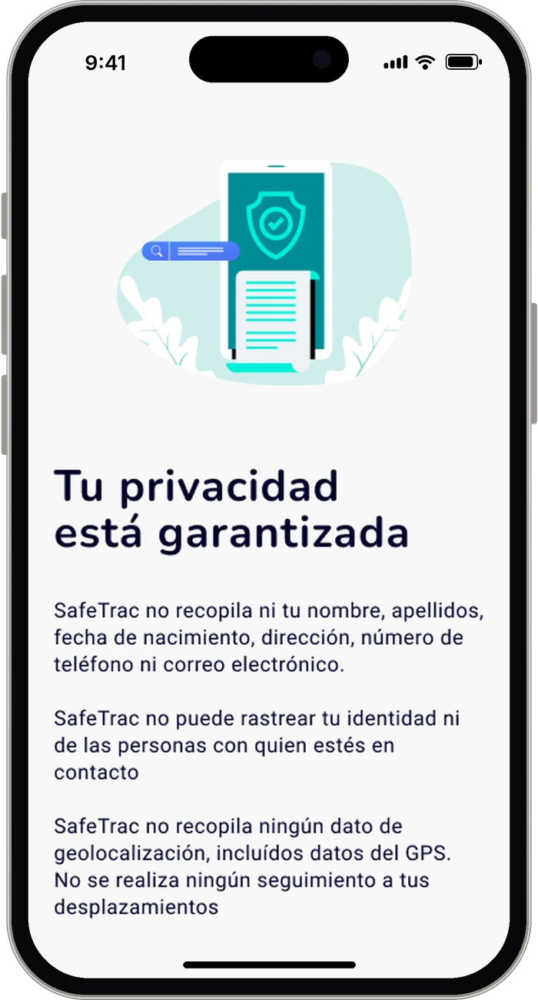
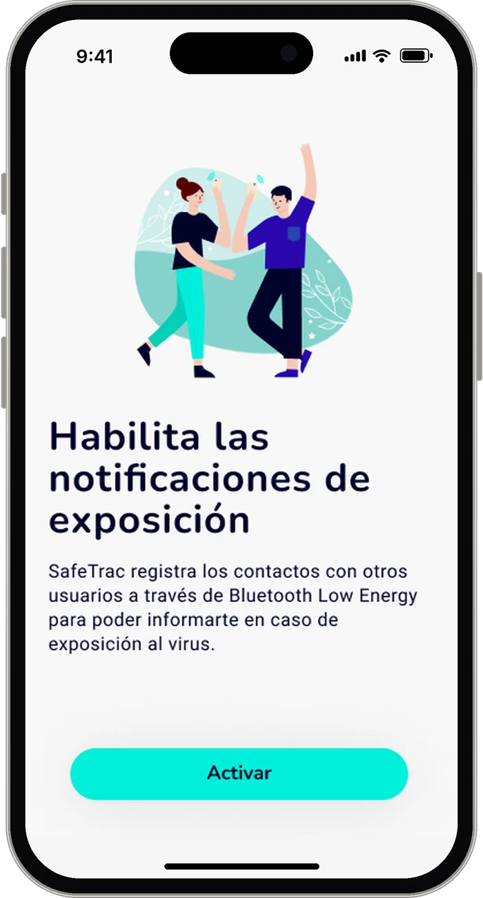

Decision 01
Say what the app does not collect
Before any permission, the privacy screen states plainly that SafeTrac does not collect name, date of birth, address, phone, email or GPS location, and cannot track identity. Consent is explicit, with checkboxes.
- Privacy explained in short, plain sentences
- Explicit consent: age and privacy policy checkboxes
- Bluetooth exposure explained before activation